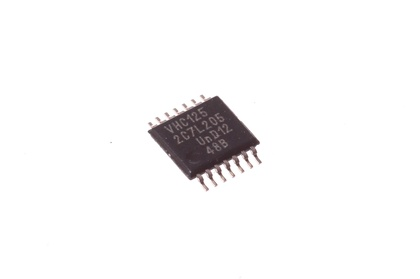
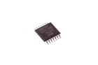
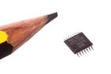
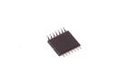

14 Pin SMD (TSSOP) Quad Buffer (74HC125) - ICQB

Summary
Name: 14 Pin SMD (TSSOP) Quad Buffer (74HC125)
ID: ICIC-TS14-X-K125-01
Hex ID: ICQB
WebPage: https://github.com/oomlout/oomlout-OOMP/wiki/ICIC-TS14-X-K125-01
Short URL: http://oom.lt/ICQB
Revision History: https://github.com/oomlout/oomlout-OOMP/blob/master/parts/ICIC-TS14-X-K125-01/
| Type |
Size |
Color |
Description |
Index |
ICIC
|
TS14
14 Pin SMD (TSSOP) |
X
|
K125
Quad Buffer |
01
|
Images



About
This part is awaiting a description.
Specifications
| Info |
Value |
| Size |
14 Pin SMD (TSSOP) |
| Description |
Quad Buffer |
Extra Details
Spotted a mistake, want to add more? Let us know oomp@oomlout.com
All images and resources are licensed [CC BY-SA] unless otherwise stated (ie. the datasheets)